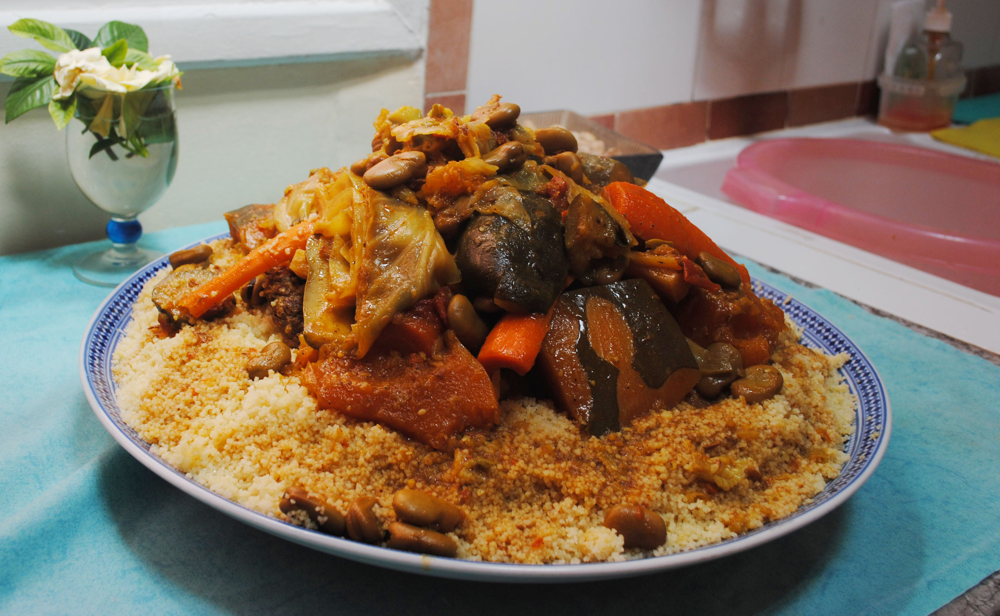

Learn how to cook couscous! Toss this tiny pasta with herbs and lemon to make a simple side dish, or try one of the couscous recipes suggested below
This authentic Moroccan couscous is a colorful dish made with perfectly cooked couscous topped with lamb, a variety of stewed veggies and a flavorful broth. My family in Morocco make it every Friday as a way to gather together and pray.
Start by browning the lamb on all sides in a large pot with some olive oil
The goal here is to get a solid crust on the outside of the lamb before adding all of the veggies.
Next add the spices and onion and sauté until translucent before tossing in the cubed carrots and root veggies
Cover with a lid to help the veggies soften up.
Once the carrots begin to soften, toss in the zucchini, eggplant, and cabbage.
Sauté for another couple minutes before adding tomato sauce, water cilantro, and parsley.
Cook over medium heat, slightly covered until all vegetables are cooked through and the lamb reaches an internal temperature of 145.
Add in the garbanzo beans and mix thoroughly, continuing to cook just until they are warm and evenly incorporated.
While the veggies and meat stew, make your couscous.
Start with your water in a pot (or follow the ingredients on your packaging).
Bring the water to a boil before adding the couscous, covering, and removing from the heat. Let sit for 10 minutes then fluff with a fork.
While this version I’m sharing with you today has all the authentic ingredients and spices, I did make a few adaptations to the original instructions so that you don’t need to buy any special tools.
In order to prepare Moroccan couscous traditionally, you need a special tool called a Couscoussier
The design of the tool allows you to cook the meat, veggies and broth on the first level while steaming the couscous to perfection on the second level. It really does result in the most fluffy couscous you will ever have.
That said, stovetop couscous comes pretty close in fluffy-ness when done right.